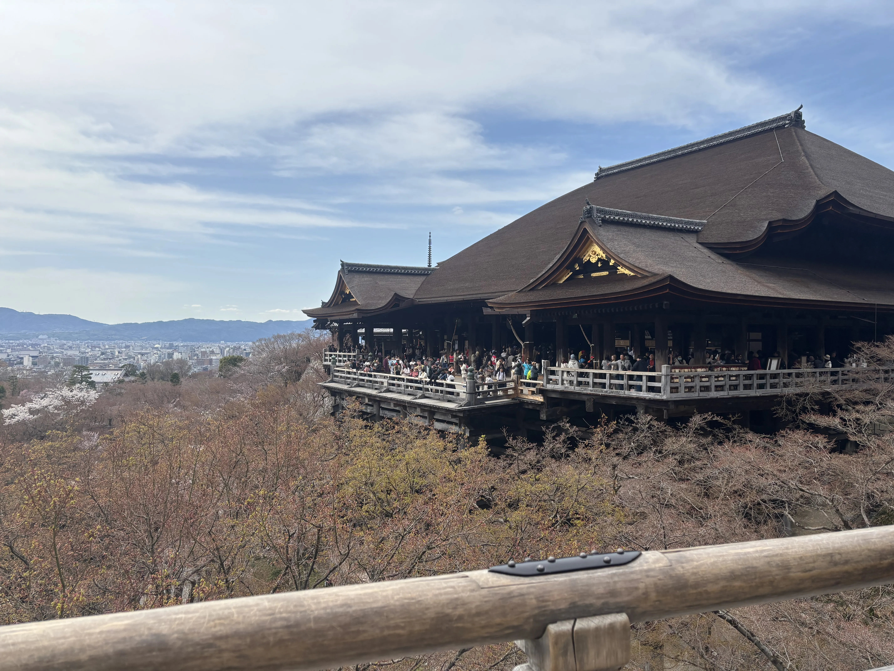
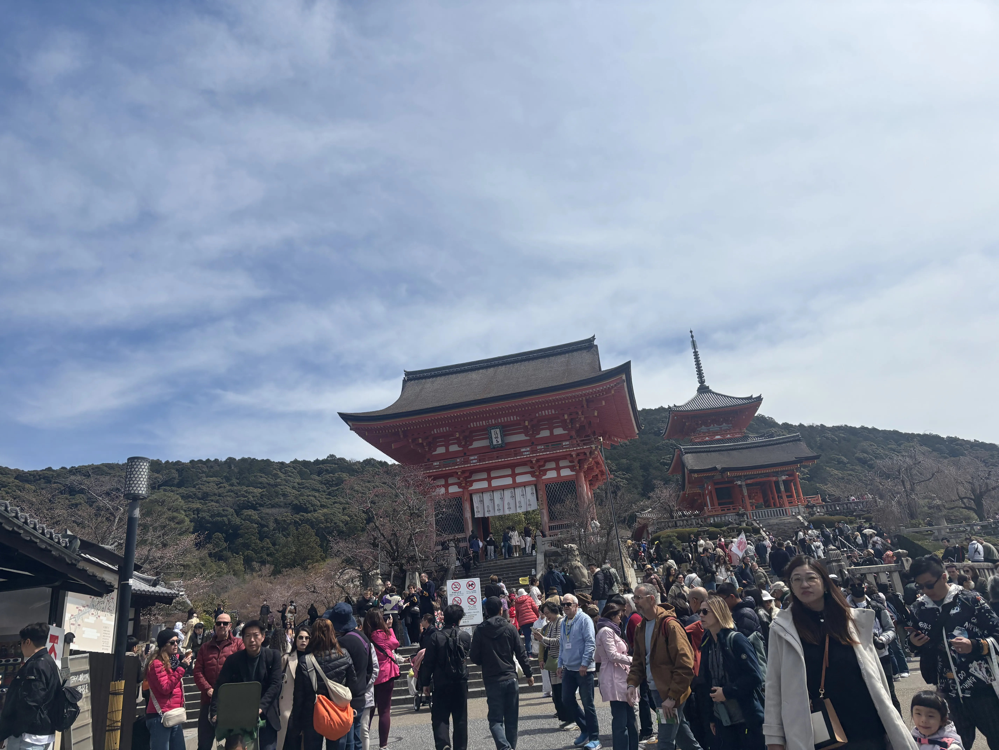
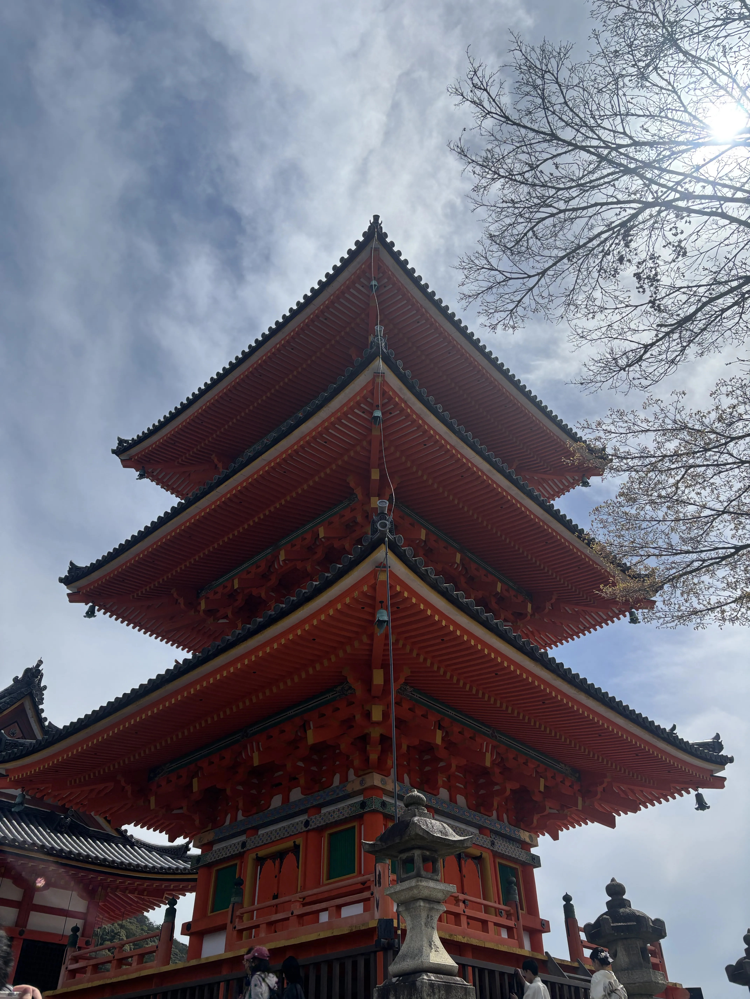
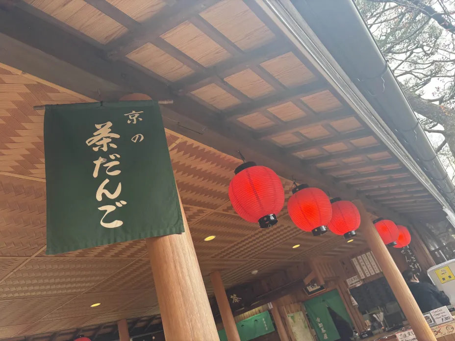
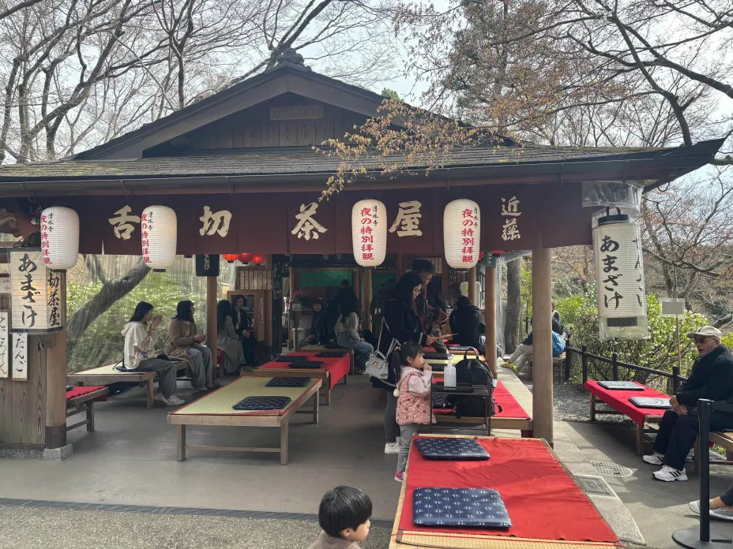
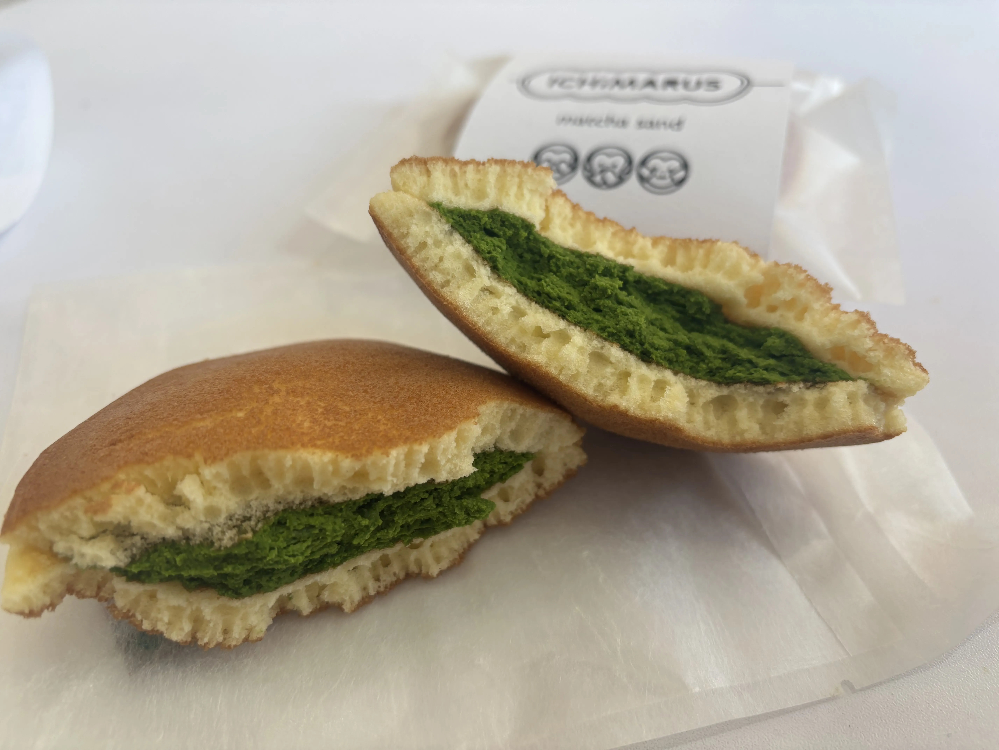
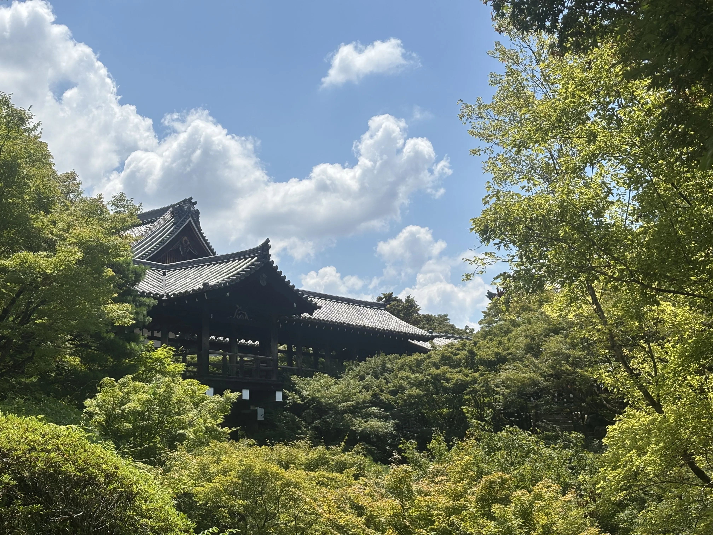

清水寺周辺
清水寺

参拝時間
基本 6:00～18:30
大人（高校生以上）500円
小・中学生 300円
清水寺本物だぁ…
工事終わってくれててうれしい
高いところにあるから景色最高
よく見る本堂しか知らなかったけど
ほかのところもきれいだった
結構赤！！！て感じだった
敷地が広いから思ったより歩いた


舌切茶屋

open 基本 6:00～18:30
お抹茶 900円
清水寺の敷地内にある茶屋
めっちゃ景色良い場所で
雰囲気最強の場所で
抹茶が飲める！？
いくしかない！！！
歩き疲れたいいタイミングで現れる
罪ですね


ICHiMARU5

open 10:30～18:30
どらやき 360円
清水坂の最初のほうにあるはず
抹茶×どら焼きがまずいわけがない
安定のおいしさ
店内に座れる場所もあるから
落ち着けるのもうれしい
安井金毘羅宮
安井金毘羅宮

参拝時間
-
有名な縁切り縁結びの神社
見たことある人も多い気がする
結構ガチな奴らしい
石に願いを描いたお札をはって
石を前と後ろからくぐると
叶うらしい
何か願うことがある人はぜひ
東福寺
東福寺

参拝時間
4～11月 9:00～16:00
12～3月 9:00～15:30
参拝料金
大人 600円
小・中学生 300円
(通天橋・開山堂のみ
通常期拝観料)
東福寺！
多分橋からの景色が一番有名(多分)
やっぱり橋からの景色が綺麗すぎる
紅葉だともっと綺麗らしい
めっちゃ個人的には
聖地巡礼なのですっごく満足
推しと撮れてうれしいね

